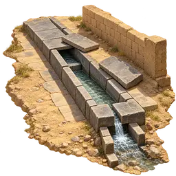
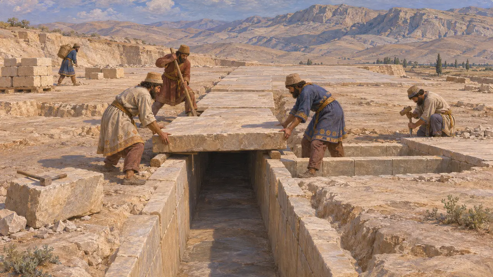
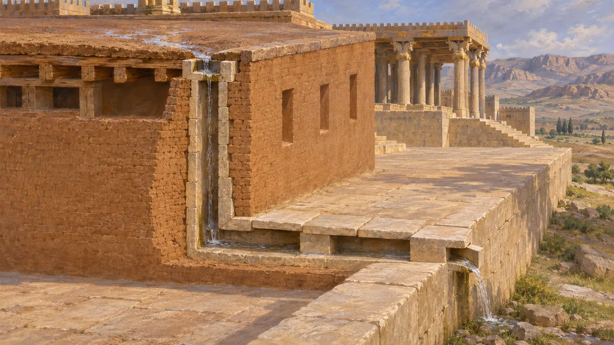
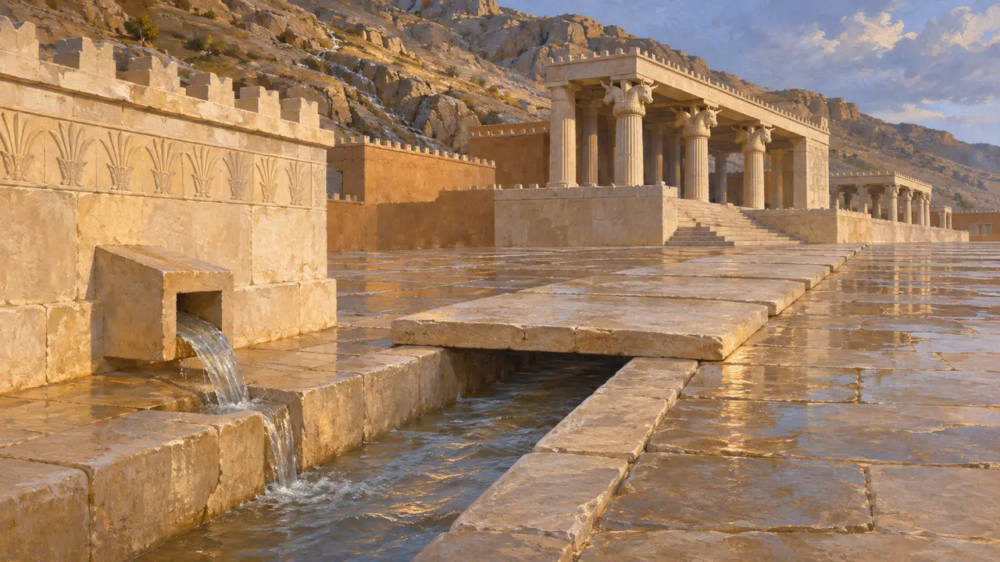
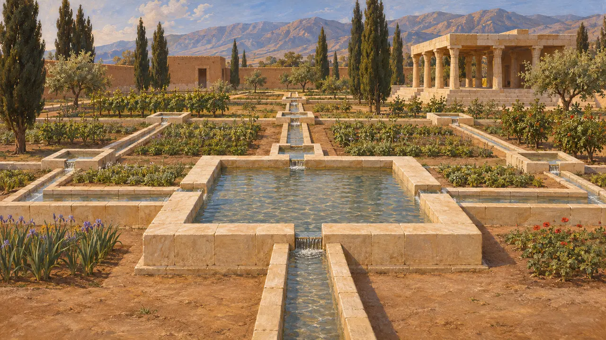
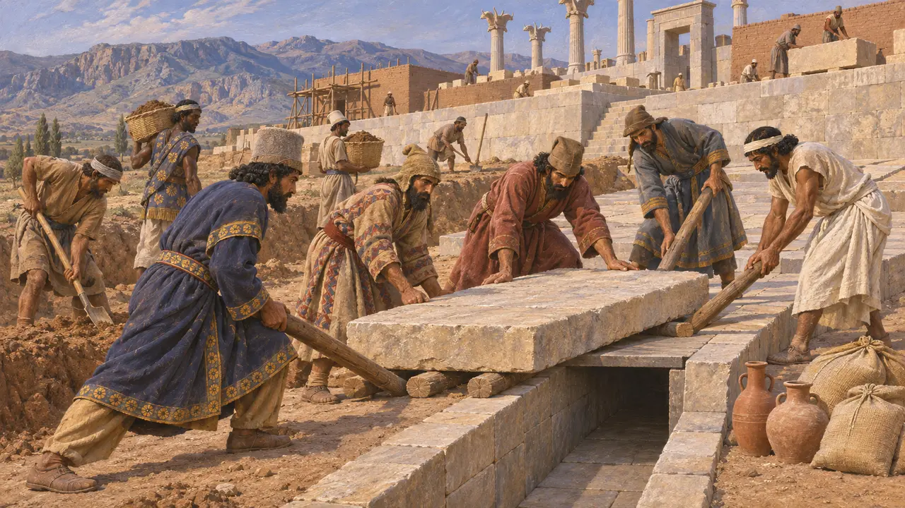

石の排水路
雨水と排水のための暗渠、ペルセポリスの基壇、紀元前518～460年頃
ペルセポリスの王の基壇の下には、一部は岩盤を掘り抜き、一部は石で組んだ暗渠網が走っていた。これらは平屋根や石畳の中庭から雨水を集め、建物から遠ざけた。この排水路がなければ、宮殿の日干し煉瓦の壁は、ペルシスの冬の雨でおそらく大きな損傷を受けていたであろう。
ゲームでは： 本作の石の排水路は、7マス以内の家々を清潔に保つ。ペルセポリスで発掘された排水路は宮殿の基壇に付属し、主に雨水を流すためのものだった。その下の町の排水についてはほとんど分かっていない。

建物が建つ前に切り出された
同時代の記録発掘者たちは、排水路網が基壇の整地中、広間や宮殿がその上に建てられる前に敷設されたことを明らかにした。水路は自然の岩盤に穿たれるか、石板で内張りして蓋をされ、その後、後から張られた床の下に隠された。これは、排水路が後から付け加えられたのではなく、当初から基壇の一部として計画されていたことを示している。
E. Schmidt, Persepolis I, 1953

屋根から水路へ
同時代の記録建物の屋根は木の梁の上に土を敷いた平屋根で、雨水を集めた。発掘者たちは、厚い日干し煉瓦の壁の中に組み込まれた縦穴をたどり、それが水を下の水路へ導いていたことを突き止めた。排水路は水を基壇の縁の排出口まで運び、基礎から遠ざけていた。
E. Schmidt, Persepolis I, 1953

雨水、排水、あるいは給水
係争中この排水網が主に雨水、すなわち屋根からの雨水と基壇背後の山から流れ下る水を処理していたという点で、研究者の見解は一致している。生活排水をどの程度流していたかははっきりしない。基壇は王宮と儀礼の場であり、確認されている便所が少ないためである。系統の一部を基壇上の貯水槽と結びつける見方もあり、排水網全体の正確な仕組みはいまなお議論が続いている。
A. Mousavi, Persepolis: Discovery and Afterlife of a World Wonder, 2012

より古い治水の伝統
同時代の記録焼成煉瓦の排水路はエラムやメソポタミアで古くから知られており、ペルシアの建築者もおそらくこうした伝統に学んだのだろう。パサルガダエでは、キュロスの庭園に切り出した石灰岩の水路が通され、一定の間隔で小さな水盤が設けられていた。これらの水路は水を排出するのではなく庭園へ引き込むものだったが、水を通すために石を加工する同じ技術を示している。
D. Stronach, Pasargadae, 1978

事業を支えた労働者たち
同時代の記録ペルセポリス城砦文書には、パールサで働く大勢の労働者に支給された穀物、葡萄酒、ビールの配給が記録されている。その多くは帝国の遠方の諸民族の出身で、熟練した職人も含まれていた。排水路の掘削もおそらく基壇建設という全体の工事の一部であり、こうした労働者たちによって行われたのだろう。
R. Hallock, Persepolis Fortification Tablets, 1969; P. Briant, From Cyrus to Alexander, 2002
出典
- E. Schmidt, Persepolis I, 1953
- A. Mousavi, Persepolis: Discovery and Afterlife of a World Wonder, 2012
- D. Stronach, Pasargadae, 1978
- R. Hallock, Persepolis Fortification Tablets, 1969
- P. Briant, From Cyrus to Alexander, 2002